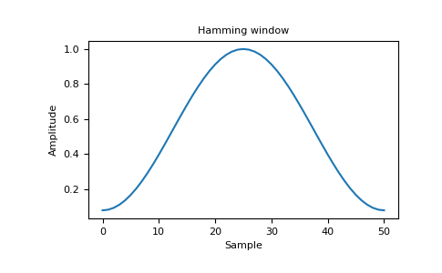
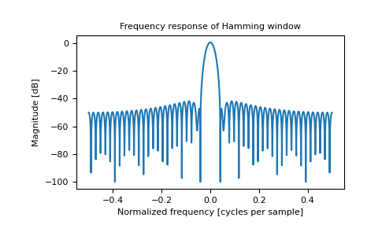

numpy.hamming¶
-
numpy.hamming(M)[source]¶ Return the Hamming window.
The Hamming window is a taper formed by using a weighted cosine.
- Parameters
- Mint
Number of points in the output window. If zero or less, an empty array is returned.
- Returns
- outndarray
The window, with the maximum value normalized to one (the value one appears only if the number of samples is odd).
Notes
The Hamming window is defined as
The Hamming was named for R. W. Hamming, an associate of J. W. Tukey and is described in Blackman and Tukey. It was recommended for smoothing the truncated autocovariance function in the time domain. Most references to the Hamming window come from the signal processing literature, where it is used as one of many windowing functions for smoothing values. It is also known as an apodization (which means “removing the foot”, i.e. smoothing discontinuities at the beginning and end of the sampled signal) or tapering function.
References
- 1
Blackman, R.B. and Tukey, J.W., (1958) The measurement of power spectra, Dover Publications, New York.
- 2
E.R. Kanasewich, “Time Sequence Analysis in Geophysics”, The University of Alberta Press, 1975, pp. 109-110.
- 3
Wikipedia, “Window function”, https://en.wikipedia.org/wiki/Window_function
- 4
W.H. Press, B.P. Flannery, S.A. Teukolsky, and W.T. Vetterling, “Numerical Recipes”, Cambridge University Press, 1986, page 425.
Examples
>>> np.hamming(12) array([ 0.08 , 0.15302337, 0.34890909, 0.60546483, 0.84123594, # may vary 0.98136677, 0.98136677, 0.84123594, 0.60546483, 0.34890909, 0.15302337, 0.08 ])
Plot the window and the frequency response:
>>> import matplotlib.pyplot as plt >>> from numpy.fft import fft, fftshift >>> window = np.hamming(51) >>> plt.plot(window) [<matplotlib.lines.Line2D object at 0x...>] >>> plt.title("Hamming window") Text(0.5, 1.0, 'Hamming window') >>> plt.ylabel("Amplitude") Text(0, 0.5, 'Amplitude') >>> plt.xlabel("Sample") Text(0.5, 0, 'Sample') >>> plt.show()
>>> plt.figure() <Figure size 640x480 with 0 Axes> >>> A = fft(window, 2048) / 25.5 >>> mag = np.abs(fftshift(A)) >>> freq = np.linspace(-0.5, 0.5, len(A)) >>> response = 20 * np.log10(mag) >>> response = np.clip(response, -100, 100) >>> plt.plot(freq, response) [<matplotlib.lines.Line2D object at 0x...>] >>> plt.title("Frequency response of Hamming window") Text(0.5, 1.0, 'Frequency response of Hamming window') >>> plt.ylabel("Magnitude [dB]") Text(0, 0.5, 'Magnitude [dB]') >>> plt.xlabel("Normalized frequency [cycles per sample]") Text(0.5, 0, 'Normalized frequency [cycles per sample]') >>> plt.axis('tight') ... >>> plt.show()
